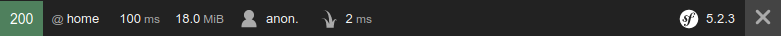

Seguretat i control d'accés
Configuració de la seguretat en Symfony
El sistema de seguretat de Symfony és molt potent i versàtil, encara que també pot resultar complicat d'entendre i configurar. En aquesta sessió aprendrem a establir els elements principals del mateix:
- El mecanisme d'autenticació, és a dir, establir on estan registrats els usuaris amb accés a l'aplicació, per poder accedir a ells i validar les credencials.
- El mecanisme d'autorització, és a dir, una vegada s'ha validat l'usuari que accedeix, i sempre que aquest siga correcte, determinar els seus permisos i a quins recursos pot accedir i a quins no.
L'arxiu "security.yaml". El firewall de Symfony
L'arxiu config/packages/security.yaml emmagatzema la configuració
general del sistema de seguretat de la nostra aplicació Symfony. El seu
contingut per defecte és aquest:
security:
enable_authenticator_manager: true
# https://symfony.com/doc/current/security.html#registering-the-user-hashing-passwords
password_hashers:
Symfony\Component\Security\Core\User\PasswordAuthenticatedUserInterface: 'auto'
# https://symfony.com/doc/current/security.html#loading-the-user-the-user-provider
providers:
users_in_memory: { memory: null }
firewalls:
dev:
pattern: ^/(_(profiler|wdt)|css|images|js)/
security: false
main:
lazy: true
provider: users_in_memory
# activate different ways to authenticate
# https://symfony.com/doc/current/security.html#the-firewall
# https://symfony.com/doc/current/security/impersonating_user.html
# switch_user: true
# Easy way to control access for large sections of your site
# Note: Only the *first* access control that matches will be used
access_control:
# - { path: ^/admin, roles: ROLE_ADMIN }
# - { path: ^/profile, roles: ROLE_USER }
Primerament cal dir que el sistema de seguretat de Symfony va canviar de forma significativa
en la versió 5.3. La clau enable_authenticator_manager: true indica que estem usant
aquest nou sistema.
La secció firewalls és el nucli principal del nostre sistema de
seguretat. Dins veiem dos subsecciones: dev, que simplement
s'assegura que el profiler de Symfony i la barra de depuració (WDT, Web
Debug Toolbar) no es veguen afectats pel nostre sistema de seguretat,
de manera que puguem seguir tenint la informació d'estat en la barra
inferior que apareix en provar l'aplicació:

La resta d'elements de l'aplicació es gestionaran des de la subsecció
main, on posarem la lògica de seguretat de la nostra aplicació. De
fet, el no tenir una subsecció pattern implica que automàticament
absorbeix la resta d'URLs que no hagen coincidit amb cap patró anterior
del firewall.
La subsecció anonymous: true indica que es permet un accés anònim a les
seccions que no estiguen protegides. De fet, si accedim a
movies-symfony i examinem la barra inferior d'estat, veurem que
hem iniciat sessió com usuaris a anònims (anon.).
Veurem a continuació com afegir elements d'autenticació en aquest apartat de configuració.
Establir la manera d'autenticació i origen de dades
Podem establir diferents formes d'autenticació, i diferents fonts de
dades d'on obtenir els usuaris per a validar. El mecanisme més simple
(i menys recomanat) consisteix a utilitzar una autenticació bàsica
d'HTTP (aquella que mostra un "prompt" bàsic per a introduir login i
password), i emmagatzemar els usuaris en el propi arxiu security.yaml.
Els passwords poden (han de) estar encriptats en aquest arxiu, però
encara així, no és un mecanisme molt recomanable d'emmagatzematge.
Ens saltarem aquesta opció, i anirem a la qual realment ens interessa: tindrem els usuaris registrats en una taula d'una base de dades MySQL (en aquest cas, de la nostra base de dades de pel·lícules), i definirem un formulari d'inici de sessió que utilitzar per a validar-nos contra aqueixa taula a l'hora d'accedir a recursos protegits.
Definir l'entitat i taula d'usuaris
En la nostra aplicació de pel·lícules anem a afegir una nova entitat per a emmagatzemar els usuaris de l'aplicació, i la seua corresponent taula associada, emprant Doctrine. Els usuaris tindran en aquest cas un identificador (autonumèric generat per Doctrine), un nom d'usuari, una contrasenya, un correu electrònic i un rol (més endavant veurem per a què s'utilitza el rol).
Per tant, crearem primer l'entitat d'aquesta forma:
php bin/console make:entity
Class name of the entity to create or update (e.g. TinyPizza):
> User
created: src/Entity/User.php
created: src/Repository/UserRepository.php
Entity generated! Now let's add some fields!
You can always add more fields later manually or by re-running this command.
New property name (press <return> to stop adding fields):
> username
Field type (enter ? to see all types) [string]:
> string
Field length [255]:
> 100
Can this field be null in the database (nullable) (yes/no) [no]:
>
updated: src/Entity/User.php
Add another property? Enter the property name (or press <return> to stop adding fields):
> password
Field type (enter ? to see all types) [string]:
> string
Field length [255]:
> 255
Can this field be null in the database (nullable) (yes/no) [no]:
> no
updated: src/Entity/User.php
Add another property? Enter the property name (or press <return> to stop adding fields):
> email
Field type (enter ? to see all types) [string]:
> string
Field length [255]:
> 255
Can this field be null in the database (nullable) (yes/no) [no]:
> yes
updated: src/Entity/User.php
Add another property? Enter the property name (or press <return> to stop adding fields):
> role
Field type (enter ? to see all types) [string]:
> string
Field length [255]:
> 20
Can this field be null in the database (nullable) (yes/no) [no]:
> no
updated: src/Entity/User.php
Add another property? Enter the property name (or press <return> to stop adding fields):
>
Success!
Una vegada creada l'entitat, el següent pas és migrar els canvis a la base de dades, com ja hem fet prèviament:
php bin/console make:migration
php bin/console doctrine:migration:migrate
Alternativament a aquests dos comandos, i en el cas que done algun conflicte amb migracions prèvies, també podem executar aquests altres dos, que gestionen millor les diferències o novetats a migrar:
php bin/console doctrine:migrations:diff
php bin/console doctrine:migrations:migrate
Podem afegir a mà un usuari de prova en la base de dades, amb aquests atributs:
- username: user
- password: user
- email: proves@proves.org
- role: ROLE_USER
Insistim, tornarem a tractar els rols més endavant. De moment deixarem establit aquest per a aquest usuari de prova.
Implementar les interfícies requerides
Per a poder utilitzar una entitat com a font d'usuaris que puguen iniciar sessió, és
necessari que aquesta entitat implemente la interfície UserInterface i la interfície PasswordAuthenticatedUserInterface, la
qual cosa obliga a definir els mètodes:
getRoles(), que retornarà un array amb els rols de l'usuari (en aquest cas, cada usuari només tindrà un rol, que retornarem en un array)getPassword(), que retornarà el password de l'usuarigetUserIdentifier(), que retornarà el login de l'usuarigetSalt(), que en ocasions no és necessari emprar. S'empra en mecanismes de codificació de passwords més avançats que els que veurem en el curs. Així que en el nostre exemple retornaremnull.eraseCredentials(), que s'empra per a eliminar informació sensible o privada de l'usuari. Pot ser útil si, per exemple, s'emmagatzema el password de l'usuari sense encriptar. En primera instància ho farem així, però després ho encriptarem, així que aquest mètode ho deixarem buit.
A més, convé implementar la interfície Serializable per a poder
serialitzar objectes de tipus User i enviar-los entre les parts de
l'aplicació (més endavant veurem com obtenir l'objecte User de
l'usuari que ha iniciat sessió). Açò implica afegir dos mètodes més: serialize (per
a convertir l'usuari en text que enviar entre components) i unserialize
(per a convertir un text en un objecte User).
Amb tot açò, la nostra entitat User queda així (eliminem els getters i
setters generats automàticament i que no anem a emprar en realitat):
# src/Entity/User.php
...
* Alternatively, the roles might be stored on a ``roles`` property,
* and populated in any number of different ways when the user object
* is created.
*
* @return string[] The user roles
*/
public function getRoles()
{
return [$this->role];
}
/**
* Returns the salt that was originally used to encode the password.
*
* This can return null if the password was not encoded using a salt.
*
* @return string|null The salt
*/
public function getSalt()
{
return null;
}
/**
* Removes sensitive data from the user.
*
* This is important if, at any given point, sensitive information like
* the plain-text password is stored on this object.
*/
public function eraseCredentials()
{
// TODO: Implement eraseCredentials() method.
}
/**
* String representation of object.
* @link https://php.net/manual/en/serializable.serialize.php
* @return string|null The string representation of the object or null
* @throws Exception Returning other type than string or null
*/
public function serialize(): ?string
{
return serialize([
$this->getId(),
$this->getUsername(),
$this->getPassword()
]);
}
/**
* Constructs the object.
* @link https://php.net/manual/en/serializable.unserialize.php
* @param string $serialized The string representation of the object.
* @return void
*/
public function unserialize($serialized)
{
list( $this->id, $this->username, $this->password) =
unserialize($serialized, ['allowed_classes' => false]);
}
En el cas de la funció unserialize, se li passa com a segon paràmetre un
array d'opcions. L'opció allowed_classes que s'utilitza en aquest
exemple, posada a false, fa que no es permeta la serialització
d'objectes de cap classe (només els tipus simples que componen els
atributs de l'entitat User, en aquest cas).
Configurar l'origen de dades i la manera d'autenticació
Anem ara a indicar on ha de buscar Symfony els usuaris quan algú intente
accedir al sistema. Per a açò, anem a l'arxiu de configuració
config/packages/security.yaml, i afegim un nou proveïdor de dades,
enllaçat a l'entitat User:
security:
providers:
...
user_provider:
entity:
class: App\Entity\User
property: username
Indiquem el nom de l'entitat, i el nom de l'atribut que s'usuarà com a nom d'usuari en l'inici de sessió.
Després, una mica més a baix en aqueix mateix fitxer (subsección
security > firewalls > main), establim que inicie sessió mitjançant
un formulari, que s'activarà amb la ruta anomenada login que definirem
després:
security:
firewalls:
dev:
...
main:
anonymous: ~
form_login:
provider: user_provider
login_path: login
check_path: login
En aquest cas, hem anul·lat (posat a null) l'accés anònim (açò és el que
significa el símbol "~" al costat d'anonymous. D'altra banda,
indiquem que tant per a mostrar el formulari com per a verificar l'inici de
sessió, s'acudirà a la mateixa ruta login, emprant com a proveïdor
d'usuaris l'element user_provider que hem definit abans, basat en
l'entitat User.
Podem, a més, definir quins recursos es protegiran amb aquest
formulari. Convé, almenys, especificar un patró de ruta que excloga al
propi formulari d'inici de sessió, ja que en cas contrari entraríem en un bucle
infinit en el qual, per a accedir al formulari d'inici de sessió, hauríem
d'iniciar sessió amb el formulari d'inici de sessió. Per a açò, editem la secció
access_control al final de l'arxiu security.yaml, i indiquem, almenys,
dues rutes: una sense protegir per a l'inici de sessió, i l'altra protegida per al
que vulguem (en aquest cas, la resta de l'aplicació):
access_control:
- { path: ^/login, rols: IS_AUTHENTICATED_ANONYMOUSLY }
- { path: ^/, rols: ROLE_USER }
Finalment, també podem especificar el sistema de codificació del password.
Ara com ara no ho usar cap tipus de codificació, per la qual cosa afegim aquest
subapartat al final (dins de la secció security):
encoders:
App\User\Entity:
plaintext
Definir la ruta i el formulari d'inici de sessió
Finalment, anem a crear un nou controlador anomenat SecurityController en
la nostra carpeta de src/Controller, que definirà una nova ruta /login
per a mostrar el formulari d'inici de sessió i verificar l'error de validació,
si és el cas. Pot quedar més o menys així:
class SecurityController extends AbstractController
{
/**
* @Route("/login", name="login")
*/
public function login(AuthenticationUtils $authenticationUtils)
{
$error = $authenticationUtils->getLastAuthenticationError();
$lastUsername = $authenticationUtils->getLastUsername();
return $this->render('security/login.html.twig', array(
'error' => $error,
'lastUserName'=> $lastUsername
));
}
}
getLastUsername() de l'objecte AuthenticationUtils.
N'hi ha prou amb recuperar la dada i passar-li-la a la plantilla:
...
$lastUsername = $authenticationUtils->getLastUsername();
return $this->render('security/login.html.twig', array(
'error' => $error,
'lastUserName'=> $lastUsername
));
login.html.twig, pot ser alguna
cosa així:
{% extends 'base.html.twig' %}
{% block title %}Movies - Login{% endblock %}
{% block body %}
<div class="container" >
<div class="row">
<div class="col-sm-12">
<h3>Login</h3>
<form method="post" novalidate>
{% if error %}
<div class="alert alert-danger" role="alert">
{{ error.messageKey }}
</div>
{% endif %}
<div class="form-group">
<label for="username">Username</label>
<input type="text" class="form-control"
name="_username" id="username"
value="{{ lastUserName }}"
placeholder="Username:" required>
</div>
<div class="form-group">
<label for="password">Contrasenya</label>
<input type="password" class="form-control"
name="_password" id="password"
value=""
placeholder="Password:" required>
</div>
<input type="submit" value="Login">
</form>
</div>
</div>
</div>
{% endblock %}
Com veiem, es té un bloc div condicional per a mostrar un error de
validació si és el cas. A més, el formulari ha de complir unes normes:
el camp de login ha de cridar-se _username (atribut "name"), i el camp
de password ha de cridar-se _password. Aquestes opcions poden
configurar-se i personalitzar-se.
Després de tots aquests passos, ja tindrem llest el sistema
d'autenticació. Pot semblar estrany, però així és... En realitat,
Symfony es fa càrrec automàticament de la validació de l'usuari quan
aquest envia el formulari d'inici de sessió. Si hi ha algun error, es registrarà
dins del controlador login i es renderizará el formulari amb el missatge
d'error. Si tot és correcte, es redirigirà a l'usuari automàticament
cap a la pàgina que havia sol·licitat.
Algunes opcions avançades
Ara que ja hem aprés a configurar una forma bàsica d'autenticació amb formulari d'inici de sessióogin, vegem alguns aspectes una mica més avançats de la configuració de la seguretat en Symfony.
Encriptar les contrasenyes
És convenient que les contrasenyes dels usuaris registrats no estiguen en text pla sense encriptar, com en l'exemple anterior. Podem emprar, per exemple, un algorisme d'encriptació Argon o bcrype per a xifrar-les. En el nostre cas, i seguint les recomanacions de la documentació oficial de Symfony deixarem que siga Symfony qui trie el millor algorisme possible. Açò suposa dos passos extra:
- Indicar a Symfony que els passwords estan encriptats
perquè aplique un algorisme per a encriptar qualsevol contrasenya,
inclòs el que introduïsca l'usuari en iniciar sessió, i així poder
comparar si les dos contrasenyes encriptades coincideixen. Per a fer
açò, hem d'editar l'arxiu de configuració
config/packages/security.yamli indicar que l'entitat Usuari utilitzarà el mètode d'encriptació que hàgem escollit:# config/packages/security.yaml security: # ... password_hashers: # auto hasher with default options for the User class (and children) App\Entity\User: 'auto' # auto hasher with custom options for all PasswordAuthenticatedUserInterface instances Symfony\Component\Security\Core\User\PasswordAuthenticatedUserInterface: algorithm: 'auto' cost: 15 - Encriptar de forma automàtica els passwords dels usuaris quan es
registren. Si tinguérem un formulari de registre en la nostra
aplicació, i tenim les dades de l'usuari guardats en un objecte
usuari, i el password en sí en un objecte
password, l'encriptació seria com segueix:use Symfony; public function register(UserPasswordHasherInterface $encoder) { ... $user = new User(); ... $plainTextPassword = "..."; // Assignem ací la resta d'atributs de l'usuari $hashedPassword = $encoder->hashPassword($user, $plainTextPassword); $user->setPassword($hashedPassord); // Guardar en la base de dades, si escau ... } public function delete(UserPasswordHasherInterface $passwordHasher, UserInterface $user) { // ... e.g. get the password from a "confirm deletion" dialog $plainTextPassword = ...; if (!$passwordHasher->isPasswordValid($user, $plaintextPassword)) { throw new AccessDeniedHttpException(); } }
El que fem és acudir a la configuració de l'arxiu security.yaml
anterior per a veure què codificador s'ha establit, i mitjançant l'objecte de tipus
UserPasswordHashInterface que rep com a paràmetre del mètode, i del seu mètode
hashPassword, codificar el password amb aqueix mateix algorisme.
Aquest mètode rep com a primer paràmetre l'usuari sobre el qual s'està treballant, i com a segon paràmetre el password a codificar. Una vegada codificat, se li assigna a l'usuari, i ja es podria guardar en la base de dades.
Per a provar el nostre exemple de pel·lícules, com no tenim formulari de registre, codificarem manualment el/els password(s) que tinguem en la base de dades. Podem emprar webs com https://bcrypt-generator.com/.
Treballar amb rols
En els exemples fets fins ara, ens hem limitat a definir un camp role en
la nostra entitat User, i a emmagatzemar un usuari amb rol ROLE_USER,
però sense prestar massa atenció al que aqueix rol significa.
Per a començar, hem de saber que tots els rols que definim en la nostra
aplicació han de començar amb el prefix ROLE_ perquè Symfony els tracte
com a tals. Existeix la possibilitat de configurar aquesta opció i posar
rols més flexibles o arbitraris.
Symfony permet definir diferents rols en una aplicació, i establir una jerarquia entre ells, de manera que un rol puga fer tot el que fa un altre més altres coses. A més, podem protegir l'accés a recursos per a determinats rols, de manera que només certs rols (o rols que estiguen per sobre d'ells en la jerarquia) puguen accedir.
Assignar diferents rols a diferents recursos protegits
En el cas que cada zona protegida de la nostra aplicació puga tenir
assignats rols diferents, n'hi ha prou amb indicar el rol (o rols entre
claudàtors) que tenen permís per a cada zona. Per exemple, en aquest cas
protegim l'accés a qualsevol ruta que comence per /admin perquè
només puguen accedir usuaris amb rol ROLE_ADMIN o ROLE_MANAGER, a més de
la configuració ja establida en exemples previs:
security
access_control:
- { path: ^/login, roles: IS_AUTHENTICATED_ANONYMOUSLY }
- { path: ^/, roles: ROLE_USER }
- { path: ^/admin, roles: [ROLE_ADMIN, ROLE_MANAGER] }
Establir jerarquies entre rols
Pot ser necessari també establir una jerarquia entre rols, de manera
que, si es té un rol de nivell superior, es tindrà accés a tots els
recursos que exigisquen un rol de nivell inferior. Per a fer açò, afegim
un subapartat role_hierarchy en la nostra secció security de
config/packages/security.yaml, establint aquesta jerarquia. En el
següent exemple, el rol ROLE_ADMIN conté a ROLE_USER, i el
ROLE_SUPERADMIN conté tant a ROLE_ADMIN (i, per tant, a ROLE_USER), com
a ROLE_MANAGER.
security:
...
role_hierarchy:
ROLE_ADMIN:
ROLE_USER
ROLE_SUPER_ADMIN:
[ROLE_ADMIN, ROLE_MANAGER]
Comprovar rols des dels controladors i vistes
Existeix també la possibilitat de forçar una comprovació de seguretat en
el codi dels controladors, basant-se en si l'usuari registrat té cert
rol o no, o simplement si s'ha autenticat o no. Per exemple, aquest
controlador permet l'accés al seu codi si l'usuari té el ROLE_ADMIN:
/**
* @Route("/movies/create", name="movies_create")
*/
public function create(Request $request)
{
$this->denyAccessUnlessGranted('ROLE_ADMIN',
null, 'Accés restringit a administradors');
...
public function otherController() {
$this->denyAccessUnlessGranted('IS_AUTHENTICATED_FULLY');
...
denyAccessUnlessGranted provoca que:
- Si l'usuari encara no s'ha autenticat, se li redirigeix a la pàgina d'inici de sessió.
- Si s'ha autenticat però no té el rol requerit, es genera una pàgina d'error HTTP 403 (accés prohibit). Aquesta pàgina es pot personalitzar.
També és possible comprovar un determinat rol o autenticació des del
codi d'una plantilla Twig, mitjançant la funció is_granted. Açò pot
servir per a mostrar o no certs apartats de la vista.
{% if is_granted('ROLE_ADMIN') %}
...
{% endif %}
Obtenir l'objecte user
Una vegada autenticats, l'objecte user es pot obtenir a través del
mètode getUser, normalment des de dins d'un controlador. Així, podríem
fer:
/**
* @Route("/admin", name="admin")
*/
public function admin()
{
$this->denyAccessUnlessGranted('IS_AUTHENTICATED_FULLY');
$user = $this->getUser();
return new Response("Bienvenido a /admin, " . $user->getUserName());
}
Des d'una plantilla Twig també és possible accedir a l'usuari
que ha iniciat sessió i obtenir, per exemple, el seu nom d'usuari, amb
l'objecte app.user:
Benvingut/a, {{ app.user.username }}
Eixint de l'aplicació (logout)
Podem configurar el tancament de sessió o logout a través d'arxius YAML exclusivament. N'hi ha prou amb seguir aquests dos passos:
- En primer lloc, establim que quan s'isca de l'aplicació es
redirigirà, per exemple, a l'arrel de la mateixa. Açò es fa en
l'arxiu
config/packages/security.yaml:. Per exemple, per a permetre tancar sessió en el firewallmain, amb el qual estem treballant en el nostre exemple, faríem açò:firewalls: ... main: logout: path: /logout target: / - En segon lloc, definim una ruta en l'arxiu
config/routes.yamlque associe el nom "logout" (o com el vulguem cridar) amb la ruta que hàgem definit abans (en aquest cas, la ruta/logout):Amb açò, i algun enllaç en les nostres plantilles per a poder tancar sessió (per exemple, en la plantilla base)...logout: path: /logout
<a href="{{ path("logout") }}">Tancar sessió</a>
... ja podrem canviar d'usuari o eixir de l'aplicació.
Recursos
El recurs d'informació el trobaràs en el capítol Security dins de la documentació oficial de Symfony.